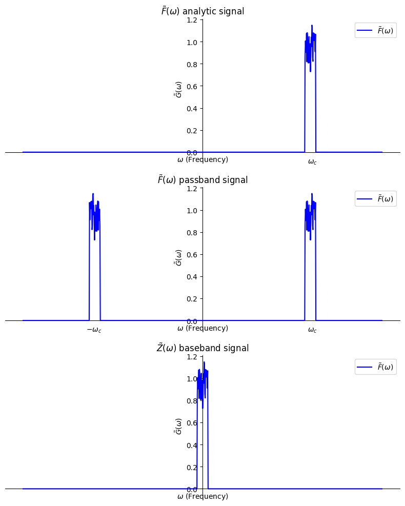
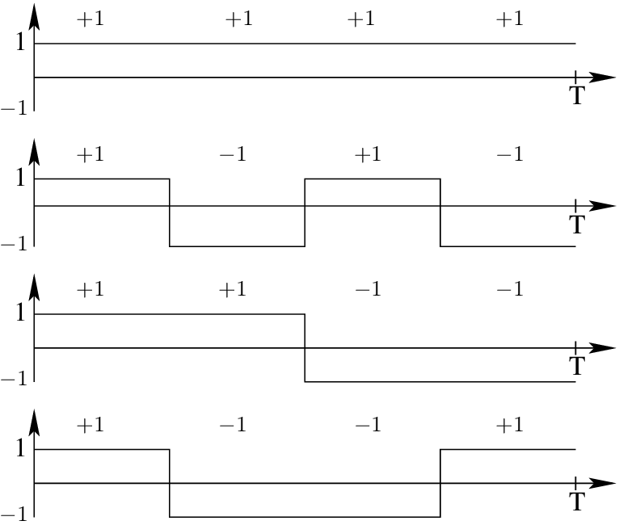

מספר משתמשים (ואורתוגונליות באופן כללי)
מערכות תקשורת מנקודה לנקודה הן חשובות אבל הן מתגמדות בחשיבותן
למערכות תקשורת רב משתמשים. נניח שהוקצתה לכם פרוסת תדר למערכת שלכם ואתם מתלבטים
איך לגרום לכל אחד מהמשתמשים לשכם להיות מסוגל לקלוט ולשדר במקביל.
העקרון הבסיסי הוא אורתוגונליות. נדאג שהמשתמשים שלהו הם אורתוגונלים
אחד לשני.
כבר ראינו דוגמה יפה לזה. הערוצים \(I\left(t\right)\) ו-\(Q\left(t\right)\) ניתנים
לקליטה בנפרד.
נרצה להרכיב \(M\) אותות שונים \(s_{m}\left(t\right)\) שיהיו אורתוגונלים זה לזה
מה שחשוב לנו הוא שבסוף עבור שני אותות שמשודרים \(g_{m}\left(t\right),g_{n}\left(t\right)\) נקבל:
\[\left\langle g_{m}\left(t\right),g_{n}\left(t\right)\right\rangle =\intop_{-\infty}^{\infty}g_{m}\left(t\right)\cdot g_{n}\left(t\right)dt=0\]
אבל נזכיר שאנחנו מעדיפים לעבוד עם אותות ב-baseband. נחשב כמה חישובים שיעזרו לנו:
\[\Re\left[\intop_{-\infty}^{\infty}z_{m}\left(t\right)\cdot z_{n}^{\ast}\left(t\right)dt\right]=\Re\left[\intop_{-\infty}^{\infty}\left[g_{m}\left(t\right)+i\hat{g}_{m}\left(t\right)\right]\cdot\left[g_{n}\left(t\right)-i\hat{g}_{n}\left(t\right)\right]dt\right]\]
\[=\intop_{-\infty}^{\infty}g_{m}\left(t\right)g_{n}\left(t\right)dt+\intop_{-\infty}^{\infty}\hat{g}_{m}\left(t\right)\hat{g}_{n}\left(t\right)dt\]
בנוסף:
\[\intop_{-\infty}^{\infty}\hat{g}_{m}\left(t\right)\hat{g}_{n}\left(t\right)dt=\intop_{-\infty}^{\infty}\mathcal{H}\left[g_{m}\left(t\right)\right]\mathcal{H}\left[g_{n}\left(t\right)\right]dt\underset{parseval}{\underbrace{=}}\]
\[=\intop_{-\infty}^{\infty}\underset{1}{\underbrace{\left|isgn\left(\omega\right)\right|^{2}}}G_{m}\left(\omega\right)G_{n}^{\ast}\left(\omega\right)d\omega=\intop_{-\infty}^{\infty}g_{m}\left(t\right)g_{n}\left(t\right)dt\]
כאשר השתמשנו בזה שהחלק המדומה הוא הילברט טרנספורם של החלק הממשי ושפונקציית התמסורת של הילברט היא פשוט \(isgn\left(\omega\right)\)
נזכיר איך זה נראה:

בסך הכל קיבלנו כי:
\[\intop_{-\infty}^{\infty}g_{m}\left(t\right)g_{n}\left(t\right)dt=\frac{1}{2}\Re\left[\intop_{-\infty}^{\infty}z_{m}\left(t\right)\cdot z_{n}^{\ast}\left(t\right)\right]\]
ולכן נוכל לדרוש שהאותות שלנו יהיו אורתוגונליים ב-baseband ולא רק ב-passband כאשר ההגדרה לאורתוגונליות היא:
\[\frac{1}{2}\Re\left[\intop_{-\infty}^{\infty}z_{m}\left(t\right)\cdot z_{n}^{\ast}\left(t\right)\right]=E_{n}\delta_{mn}\]
הדוגמה הפשוטה ביותר שלקחנו הם שני אותות:
\[z_{1}\left(t\right)=I\left(t\right),z_{2}\left(t\right)=iQ\left(t\right)\]
בבירור:
\[\frac{1}{2}\Re\left[\intop_{-\infty}^{\infty}I\left(t\right)\cdot\left[-iQ\left(t\right)\right]\right]=0\]
אפשר לשים לב שאפילו בחלוקה הראשונית שלנו לסימבולים בזמן כלומר שאנחנו משדרים סימבול
ואת הסימבול הבא משדרים אחריו אנחנו יכולים לבדוק ולראות שהם אורתוגונלים:
\[z\left(t\right)\in\left\{ I_{m}\left(t\right)Rect\left(\frac{t-mT_{s}}{T_{s}}\right),iQ_{m}\left(t\right)Rect\left(\frac{t-mT_{s}}{T_{s}}\right)\right\} _{m=-\infty}^{\infty}\]
אפשרות נוספת היא חלוקה בתדר כמו FSK (נתעלם מהחלוקה לסימבולים שונים בזמן)
\[z_{km}\left(t\right)\in\left\{ e^{i\omega_{k}t}Rect\left(\frac{t-mT_{s}}{T_{s}}\right)\right\} _{m=-\infty}^{\infty}\]
מה צריכות להיות התדירויות כדי שבאמת נקבל אורתוגונליות? נחשב עבור שני סימבולים בעלי אותו זמן \(m=0\) כלומר הראשונים
\[\Re\left[\intop_{-\infty}^{\infty}z_{k0}\left(t\right)z_{l0}^{\ast}\left(t\right)dt\right]=\Re\left[\intop_{0}^{T_{s}}e^{i\omega_{k}t}e^{-i\omega_{l}t}dt\right]=\Re\left[\intop_{0}^{T_{s}}e^{i\left(\omega_{k}-\omega_{l}\right)t}dt\right]\]
\[=\Re\left[\left[\frac{1}{i\left(\omega_{k}-\omega_{l}\right)}e^{i\left(\omega_{k}-\omega_{l}\right)t}\right]_{0}^{T_{s}}\right]=\Re\left[-i\frac{e^{i\left(\omega_{k}-\omega_{l}\right)T_{s}}-1}{\left(\omega_{k}-\omega_{l}\right)}\right]=\frac{\sin\left[\left(\omega_{k}-\omega_{l}\right)T_{s}\right]}{\omega_{k}-\omega_{l}}\]
וקיבלנו תנאי:
\[\omega_{k}-\omega_{l}=n\frac{\pi}{T_{s}},n\in\mathbb{N}\]
כלומר אנחנו צריכים קפיצות תדר מסויימות אחרת נאבד את האורתוגונליות!
CDMA
שיטה אחרת היא שפותרת לנו את בעיית המשתמשים היא ליצור קוד עבור כל משתמש כך שהאותות
הם אורתוגונלים. כלומר נרצה ליצור רצף פונקציות \(z_{n}\left(t\right)Rect\left(\frac{t-mT_{s}}{T_{s}}\right)\) שהן אורתוגונליות האחת לשנייה
כלומר נדרוש כי:
\[\frac{1}{2}\Re\left[\intop_{0}^{T_{s}}z_{m}\left(t\right)\cdot z_{n}^{\ast}\left(t\right)\right]=E_{n}\delta_{mn}\]
אחת הדרכים לעשות את זה היא פונקציות שמורכבות ממלבנים. ניקח לדוגמה את 4 הפונקציות הבאות

הן בבירור אורתוגונליות האחת לשנייה. בכל זמן נשדר את האות:
\[z\left(t\right)=s_{1m}z_{1}\left(t\right)Rect\left(\frac{t-mT_{s}}{T_{s}}\right)+s_{2m}z_{2}\left(t\right)Rect\left(\frac{t-mT_{s}}{T_{s}}\right)+s_{3m}z_{3}\left(t\right)Rect\left(\frac{t-mT_{s}}{T_{s}}\right)+s_{4m}z_{4}\left(t\right)Rect\left(\frac{t-mT_{s}}{T_{s}}\right)\]
נשים לב שאם יש לנו 4 משתמשים כל אחד מהם יכול להחליט לקלוט רק את האות שלו!
\[\frac{1}{2}\Re\left[\intop_{-\infty}^{\infty}z\left(t\right)\cdot z_{n}^{\ast}\left(t\right)Rect\left(\frac{t-mT_{s}}{T_{s}}\right)dt\right]=\frac{1}{2}\Re\left[\intop_{mT_{s}}^{\left(m+1\right)T_{s}}z\left(t\right)\cdot z_{n}^{\ast}\left(t\right)dt\right]=s_{nm}\]
נשים לב שזה לא אומר להחליף את המקלט IQ הקודם שבנינו. כי זה שיעזור לנו לקבל את \(z\left(t\right)\)
(כמובן ניתן לבנות מקלט יעודי) אבל בצורה הזו אנחנו אפילו יכולים לבנות מקלט דיגיטלי
אשר שומר את הקוד שלנו \(z_{n}\left(t\right)\) בזיכרון ומשתמש בו כדי לפענח את
הסימבולים שקשורים לנו.
לאומת האפנונים שלמדנו עליהם עד עכשיו זה כבר משהו שהשתמשו בו
באופן רחב לתקשורת 3G ל-GPS ואפילו ל-WIFI (באופן קצת שונה)